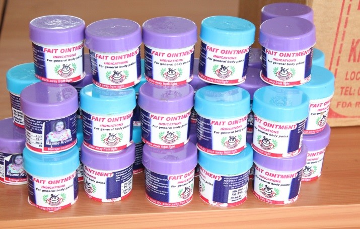
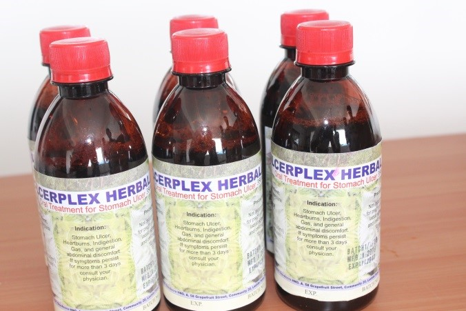

Medicinal Plant Stakeholders Roundtable
On 12th March 2016, The Institute of Applied Science and Technology in collaboration with the Technology Development and Transfer Centre of the University of Ghana organised an Industry Academia Round Table Discussion for a cross section of stakeholders engaged in the manufacture of Traditional medicine in Ghana. The interactive session brought together key stakeholders in the Traditional medicine value chain. The meeting was attended by over fifty representatives from, GHAFTRAM, Ghana Traditional Medicine Foundation, The University of Ghana Research Community and Traditional Medicine Practice Council, Ministry of Health.
Picture 1:Partcipants
The round table was divided into three sessions namely; Plenary, Round Table Discussion and an Exhibition.
Session 1: Plenary Sessions
The Acting Director of IAST, Professor Boateng Onwona-Agyemang chaired the meeting. The Chairman welcomed participants in a brief welcome address and explained the purpose of the discussion. He indicated that, the meeting was a platform created by TDTC and IAST for interaction between industry-academia. Industry Academia Interactions are necessary as these interactions pave way for Industry to inform Academia of their technical challenges and Academia develops innovative and scientific solutions to the technical problems faced by industry. He further indicated that, intensive research is essential in finding solutions and developing viable products. He also stated that findings from these research will bring about cheaper processing steps, strengthen Research and Development departments of local industries and reduce drastically man hours for training.
Picture 2: Professor Boateng Onwona-Agyeman addressing the participants
Dr Regina Appiah-Opong was introduced as the facilitator for all sessions of the Round Table discussions. The various themes addressed by the presentations in the plenary sessions were as follows:
Intellectual Property Protection - Mrs. Diana, TDTC, University of Ghana
Picture 3: Presentation by Mrs. Diana TDTC, University of Ghana
Conservation of Medicinal plants - Dr. Naalamle Amissah, University of Ghana
Picture 4: Presentation by Dr. Naalamle Amissah, University of Ghana
Biologically Active Phyto Chemicals - Dr. Mary Anti Chama, Chemistry Department, University of Ghana
Picture 5: Presentation by Dr. Mary Anti Chama, Chemistry Department, University of Ghana
Promoting safe, efficacious and affordable traditional medicine - Nana K. Obiri, GHAFTRAM
Picture 6: Presentation by Nana K. Obiri, GHAFTRAM
Presentation by Stakeholders - Ofoso Quarm, Chairman Traditional Medicine Foundation, Dr. E.N. Mensah, Traditional Medicine Practice Council, Ministry of Health
Picture 7: Presentation by Ofoso Quarm
A Summary of Key Issues Presented by Speakers is highlighted in Table 1 below:
Table 1: Topic, Key issues and reference persons
|
Topic |
Key Issues | Way forward | Reference |
| Protection of Intellectual Property |
|
1. Industry should pay for research 2. Non-disclosure agreement 3. Benefit sharing agreement
|
Mrs. Diana Owusu Antwi |
| Conservation of Medicinal Plants |
|
Field trials | Dr. Naalamle Amissah |
| Biologically Active Phyto Chemicals | Dichapetalum can be used as anticancer drugs, rodenticides and contraceptives among other things | Dr. Mary Anti Chama | |
| Promoting safe, efficacious and affordable traditional medicine |
|
|
Nana K. Obiri |
| Bottle necks in the development of Traditional Medicine |
|
|
Dr. E.N. Mensah |
Session 2: Round Table Discussions
A number of issues were identified and addressed during the interactive sessions, the major issues are highlighted below:
Intellectual Property Protection
Major issues raised by practitioners on Intellectual Property protection included the number of years and Intellectual Property could be protected, Geographical indication and whether plants could be patented. The University of Ghana representative explained that, Intellectual property can be protected for up to twenty years subject to the payment of patent fees. Failure to pay patent fees leads to the forfeiture of the patent. It was recommended that practitioners should document products and processes to aid patenting. Practitioners were also informed of non-disclosure agreements the University of Ghana has put in place to guide engagements with industry. Members were informed that plants cannot be protected, however new breeds and products from these plants can be patented if they are new, useful and not obvious.
Conservation of Medicinal Plants
The creation of a medicinal plants incubator by the University of Ghana was discussed. It was proposed that, participants should consider funding the project as a way forward for traditional medicine in Ghana. Practitioners expressed their readiness to support the establishment of the medicinal plants incubator. It was recommended that practitioners disclose medicinal plant species that are going extinct to academia to enable academia develop measures to propagate and sustain the species. Members were urged to establish trust in their dealings to enhance collaboration. The need to establish a University that specialises in herbal medicine was also discussed.
Biologically Active Phyto Chemicals
The need for identification of active ingredients in drugs was highlighted. Members acknowledged that the identification of these active ingredients will aid in standardisation and working with academia will assist in this regard.
General Comments
It was recommended that, practitioners develop drugs systematically by aiming for safety, efficacy and quality respectively. The University of Ghana expressed readiness to develop short term courses on safety to assist practitioners. The need for practitioners to use trained personnel to assist in diagnosis was discussed.
Members were informed that, the Nogouchi Memorial Institute has the capacity to conduct chronic toxicity tests if patrons can afford to bear the cost. A recommendation was made to Academia to come up with moderately priced automated manufacturing methods to assist practitioners.
Exhibition of some Plants Medicines
Picture 8: Medicine

Picture 10: Ointment

Picture 11: Herbal Medicine